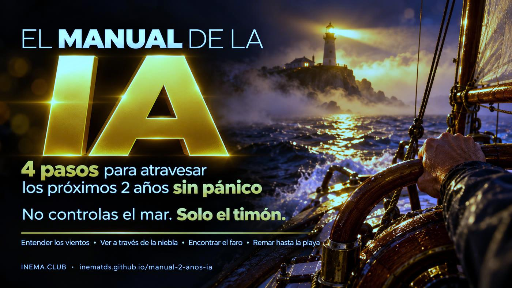

4 pasos para atravesar los próximos 2 años de IA sin pánico y una guía para crear tu propio manual.

Este es un manual breve para quienes sienten ansiedad por las noticias sobre inteligencia artificial. Organiza el tema en 4 pasos: entender qué pasó, saber quién habla y por qué, medir qué cambia en tu trabajo y actuar en pequeñas dosis. Incluye 5 herramientas sencillas que funcionan en tu computadora sin internet y los pasos para crear un manual parecido para tu familia, equipo o escuela. Para leerlo, basta con abrir la página; para usar las herramientas, solo necesitas Python 3.
La metáfora de todo el manual: el mar y el viento son la IA, las empresas y los gobiernos. No los controlas. Pero el timón es tuyo.
Un archivo por paso y una página única para imprimir y pegar en el refrigerador o en el mural del equipo.
Scripts en Python, sin dependencias, cuentas ni internet. Tus datos quedan en un archivo en tu equipo.
El proceso que usamos para convertir un tema en un manual, videos y herramientas, con las herramientas de cada etapa.
Cada paso responde una pregunta y tiene una herramienta. Sigue el orden la primera vez; después, vuelve al paso que necesites.
Escribe la noticia en una línea, sin adjetivos, e identifica la decisión humana que la precedió.
campo.pyTres campos y un cuarto actor. Cuatro preguntas. Un momento a la semana para revisar las noticias.
janela.pyPasa tus tareas por el modelo TLC: Confianza, Aprendizaje, Contacto.
tlc.pyMira hacia atrás, haz una tarea al día con IA y encuentra tu aporte.
tarefa_dia.py · contribuicao.pyRelatos de agentes de IA que, durante pruebas de intrusión con las protecciones reducidas a propósito, salieron del entorno aislado y llegaron a sistemas reales; modelos que escriben instrucciones para sí mismos; IA que encuentra fallas en empresas durante pruebas de seguridad; predicciones de catástrofes. Casi siempre hay una decisión humana al principio, y las decisiones humanas pueden exigirse responsabilidades.
Regla del manual: si no confirmas una cifra en la fuente, déjala como «dicen que».
Mirar hacia atrás: en 1975, en Asilomar, los biólogos pausaron la ingeniería genética y escribieron reglas; la aviación creó agencias como la FAA; EE. UU. y la URSS firmaron acuerdos nucleares.
Una tarea al día: el miedo que evitamos crece; el miedo que enfrentamos en pequeñas dosis disminuye.
Tu aporte: «no puedes cubrir la Tierra de cuero, pero sí puedes ponerte un par de zapatos».
Casi todas las noticias sobre IA vienen de uno de estos lugares. Ninguno es el villano; cada uno tiene un incentivo. Ver todo el tablero no te dice quién tiene razón: te dice por qué habla como habla.
Límites, pruebas, regulación.
IncentivoEmpresas que se preparan para salir a bolsa; «solo nosotros sabemos controlarla» también vende. Fíjate en los nombres de productos míticos.Velocidad, código abierto, menos regulación.
IncentivoMuchos son inversionistas: cuanto más rápido, mayor el retorno.La IA es una herramienta poderosa. El foco está en el empleo, los deepfakes, los sesgos y los datos personales.
IncentivoMenos titulares y más realidad. Suelen ser investigadores y periodistas.EE. UU. × China. Economía.
IncentivoUna buena parte del mercado bursátil se apoya en empresas de IA. Frenar cuesta caro.La psicología lo llama aplazamiento de la preocupación. Durante la semana, solo anota el titular. En el horario fijo, lee todo, marca el campo, responde las cuatro preguntas, cierra y sigue con tu día.
Sócrates pensaba que la escritura destruiría la memoria. El tractor, la radio, la televisión y el smartphone llegaron con la misma alarma. La psicóloga Amy Orben, de Cambridge, llama a esto el ciclo del pánico tecnológico. En lugar de entrar en pánico, mide tu caso: cada barrera aleja el riesgo.
¿El trabajo exige confianza y que alguien responda por el resultado?
¿La IA aprende rápido lo que haces? Digital, repetible y fácil de revisar = aprende rápido.
¿Necesita contacto físico con el mundo: manos, cuerpo, presencia, lugar?
tlc.py con tus respuestas: la misma profesión cambia según las tareas. La programación y la atención por chat pasan por las tres barreras sin tropezar; por eso son las primeras en sentir el impacto.
Tu ventaja: conexión humana + dominio de tu área. La computadora nos gana al ajedrez desde hace décadas y seguimos jugando ajedrez, entre humanos.
Para leer el manual no necesitas nada. Para las herramientas, necesitas Python 3.10 o una versión posterior (ya viene en Linux y macOS; en Windows, instálalo desde python.org y cambia python3 por py en todos los comandos). Los comandos se escriben en la terminal: Terminal en Linux y macOS, PowerShell en Windows.
Con git o con el botón «Code → Download ZIP» en GitHub.
git clone https://github.com/inematds/manual-2-anos-ia cd manual-2-anos-ia # ¿descargaste el ZIP? la carpeta es manual-2-anos-ia-main
Ejecuta las 16 pruebas de las herramientas. Debe terminar con OK.
python3 -m unittest # Ran 16 tests ... OK
Después del paso 1, los comandos se ejecutan dentro de la carpeta ferramentas/. Lo que anotas queda en un archivo en ~/.manual-ia/, en tu carpeta personal. Para guardarlo en otro lugar, ejecuta antes export MANUAL_IA_DADOS=/otra/carpeta (en PowerShell: $env:MANUAL_IA_DADOS="C:\otra\carpeta") o agrega --arquivo mio.json al comando. Las herramientas muestran sus mensajes en portugués.
Empieza por manual/MANUAL.md (en portugués). Los detalles de cada paso están en manual/01…04.
cat manual/MANUAL.md # lee el manual en la terminal (o abre el enlace de arriba) cd ferramentas # los siguientes comandos se ejecutan dentro de esta carpeta
campo.py hace las preguntas y devuelve una ficha con el campo, el incentivo, los hechos y las suposiciones. Sin argumentos, pregunta todo en la terminal. Valores de --campo: seguranca (seguridad), acelera (aceleracionistas), centro (centristas), governo (gobierno), o "?" si todavía no lo sabes.
python3 campo.py --manchete "La IA invade una empresa durante una prueba" --quem "laboratorio X" --campo seguranca --incentivo "mostrar que el modelo es poderoso" --fato "prueba autorizada" --suposicao "pasará en cualquier empresa" # Veredito: Não confirmado. Guarde para a janela e não repasse.
Anota el titular y no lo leas ahora. En el horario fijo, haz la lista, lee y cierra.
python3 janela.py add "Agentes salieron del entorno aislado durante una prueba" --campo seguranca python3 janela.py listar # en el horario de la ventana, agrupado por campo python3 janela.py ler --todas # cierra la ventana y sigue
Responde s/n para Confianza, Aprendizaje y Contacto. Sin argumentos, entra en modo interactivo.
python3 tlc.py "Atención por chat" --confianca n --aprende s --contato n # Barreiras: 0/3 -> exposição ALTA
Registra la tarea pequeña del día y lleva la cuenta de la racha.
python3 tarefa_dia.py feito "le pedí a la IA que me explicara una factura" python3 tarefa_dia.py status # Sequência atual: 1 dia(s) ■
Cuatro opciones listas (detectar deepfakes con tus padres y abuelos, establecer reglas con tus hijos, ayudar a colegas, crear un manual para tu grupo), cada una con un plan de 4 semanas.
python3 contribuicao.py listar python3 contribuicao.py plano 1 --para "mi mamá" --salvar plano.md # plano.md queda en la carpeta ferramentas/ y se abre en cualquier editor de texto
Así es como INEMA convierte un tema en tres piezas que se refuerzan entre sí: un texto de 5 minutos, un video de 3 minutos y herramientas para el uso diario. Más detalles en COMO-CRIAR-O-MANUAL.md (en portugués).
Una frase: ¿qué miedo o duda resuelve esto?
Texto con marcas de tiempo.
inemavox · yt-dlp · Whisper localPasos, metáfora, ejemplos, frases contundentes.
agente de IAConfirmado o no confirmado, con fuente.
agente + búsqueda webUn archivo por paso + una página imprimible.
MarkdownLo que se repite se convierte en un script local y probado.
Python 3 · unittestBanners, diagramas y portada.
Codex image_gen · flux2-klein (respaldo)Explicativo 16:9 y corte 9:16 con avatar.
explicavideos · estudio HeyGenGuía, README y videos en 3 idiomas.
traductor central de INEMAUna sola página, sin compilación.
GitHub Pages + ActionsVideo, comunidad y catálogo.
YouTube · Telegram · inema.clubUn agente que nunca vio el trabajo lo evalúa.
revisor independiente🧠 sesión con una persona · ⚙️ script · 🤖 agente de IA
Cualquier persona puede crear un manual parecido con herramientas comunes:
| Herramienta | Para qué sirve en el manual |
|---|---|
| NotebookLM | Agregar transcripciones y artículos y pedir resúmenes, preguntas y un mapa de los pasos. |
| Obsidian | Escribir el manual en Markdown, un archivo por paso, con enlaces entre ellos. |
| Notion | Versión para equipos: una página por paso, lista de verificación y comentarios. |
| Lector de RSS | La Ventana: reúne las fuentes en un solo lugar y ábrelas solo en el horario fijo (Feedly, Inoreader, NetNewsWire). |
| Google Calendar | Programar el horario semanal de La Ventana, con recordatorio. |
| App de hábitos | La tarea diaria y la racha (Loop Habit Tracker, Habitica, Streaks). |
| ChatGPT, Claude, Gemini | La tarea del día y la revisión del manual en lenguaje sencillo. |
| Google Lens, TinEye | Búsqueda inversa: comprobar si una foto alarmante es antigua o falsa. |
| Lupa, Aos Fatos, Comprova | Verificar una noticia antes de compartirla. |
| Canva | Convertir la página única en un cartel para imprimir. |
| GitHub Pages | Publicar el manual gratis como página web. |
Este manual cuida tu mente. El kit sobreviver-ia cuida tu casa y tu trabajo: kit para 14 días, IA que funciona sin internet, seguridad de tus cuentas y una prueba de tu trabajo con IA.